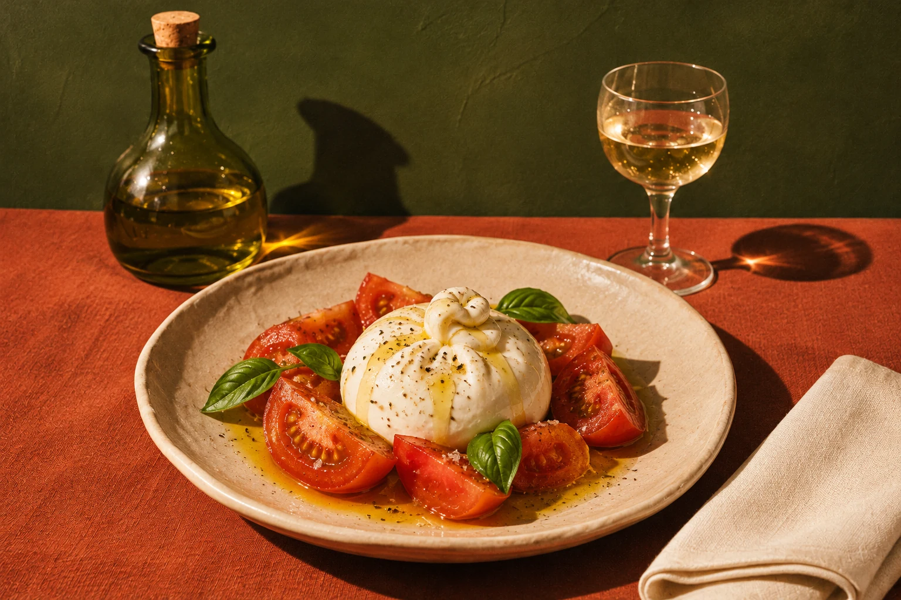
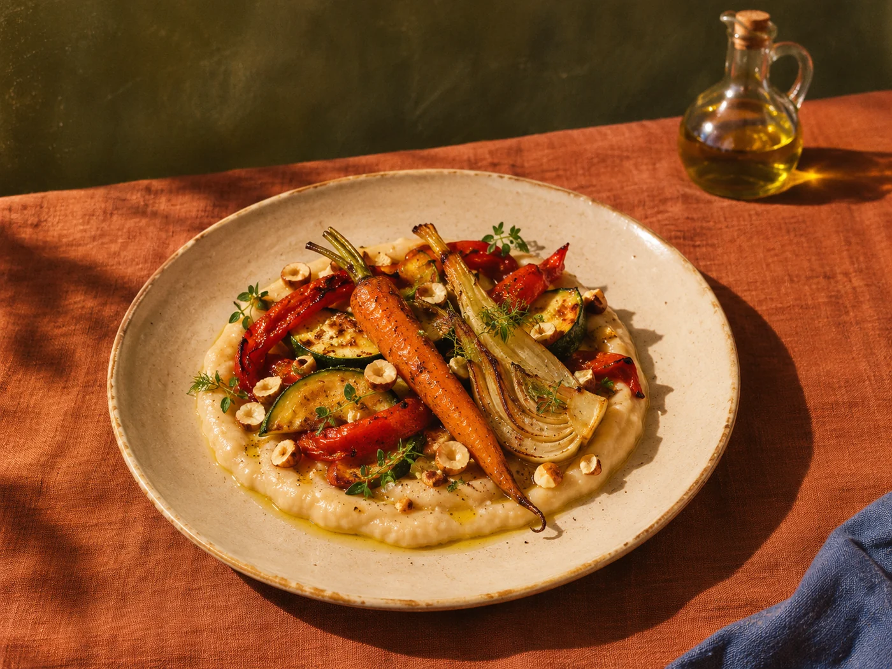
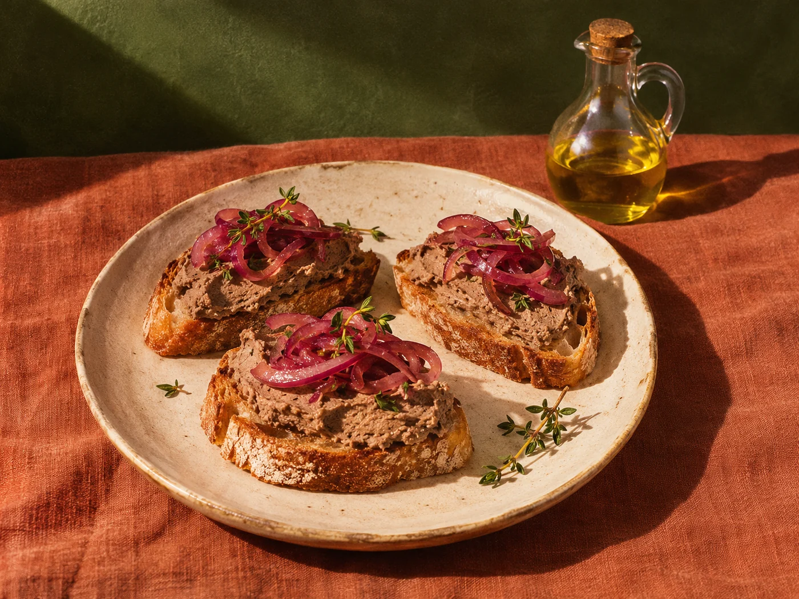
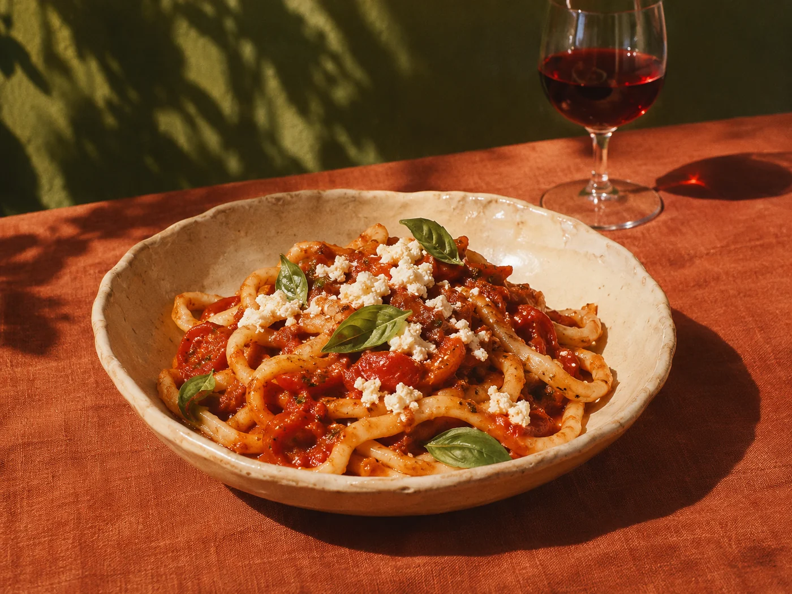
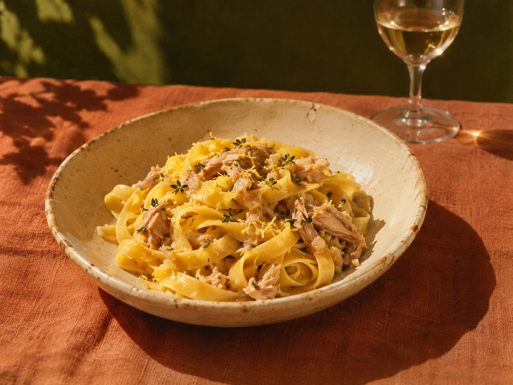
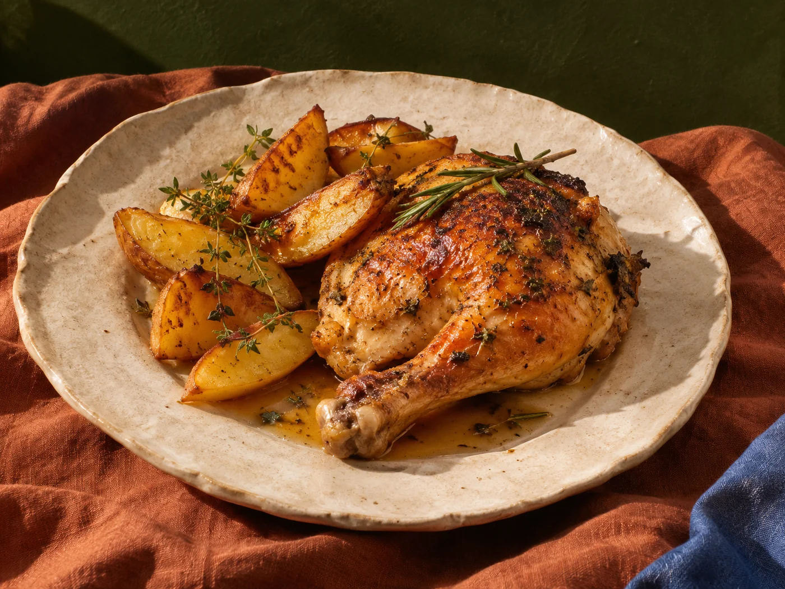
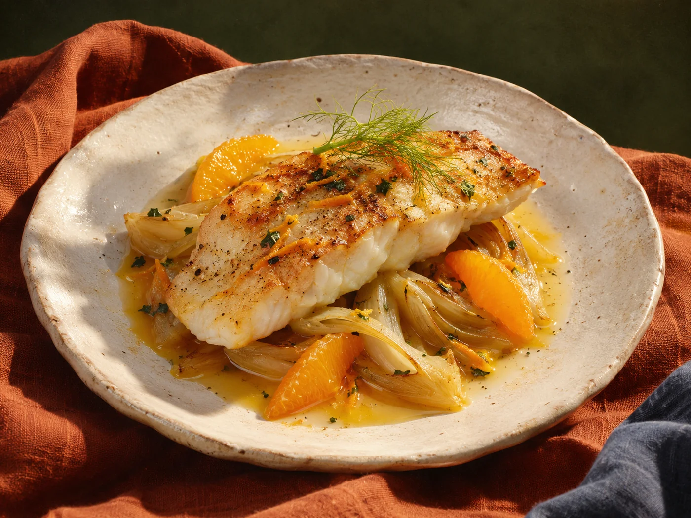
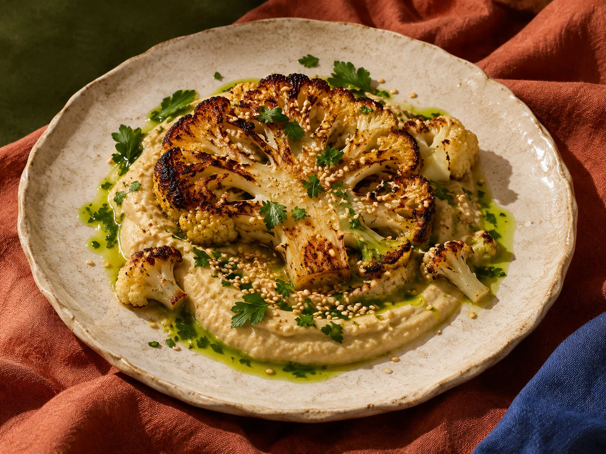

Starter
· Vegetarian
Burrata, tomatoes & basil
€14Creamy burrata, marinated tomatoes, basil and extra virgin olive oil.
Allergens: MilkFrom our kitchen
A few thoughtfully chosen ingredients. Italian recipes, a contemporary touch and the pleasure of eating together.
A table to try it







